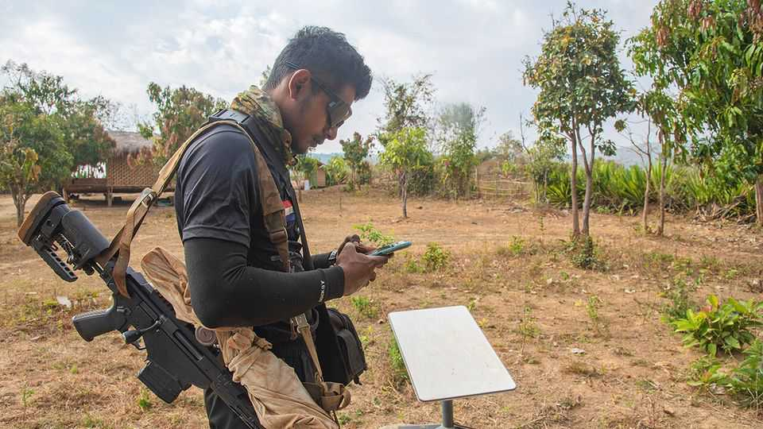
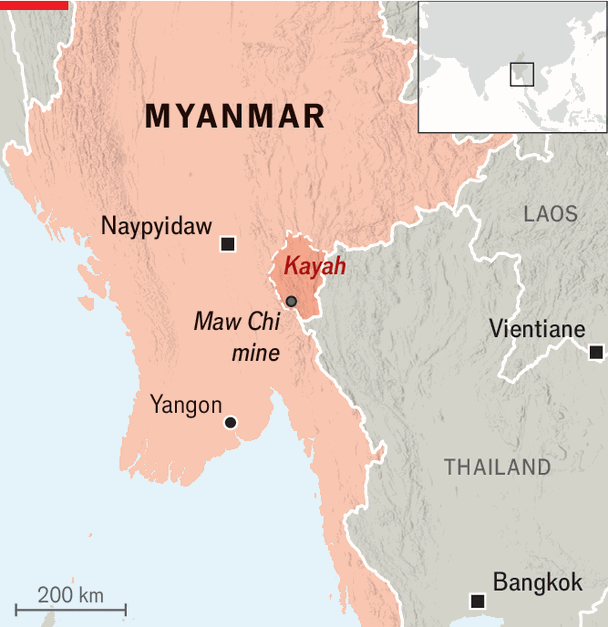

Dead Starlink terminals in Myanmar are getting people killed
Has Elon Musk taken another war zone offline?

Nov 5th 2026
UNDER BRITISH rule, Burma boasted the largest tungsten mine in the world at Maw Chi, near the border with Thailand. Decades of war and misrule have slashed the mine’s output. But labourers working in small teams at Maw Chi still dig up the metal before sending it on to Thailand and global markets to make aeroplanes, missiles and semiconductors. That has made Maw Chi a prize in the war between the military junta which seized power in Myanmar in 2021 and rebels opposing it.
Two years ago rebels captured Maw Chi and started to put its revenue stream towards their war effort. The junta responded with occasional air strikes on the mine. Rebels countered by creating an ingenious early-warning system using Starlink, the space-based internet service that is run by SpaceX. When the junta launched an attack aircraft, a spotter near the airfield would alert civilians at the mine site to take shelter. But on September 1st that warning system failed. A jet bombed the mine at Maw Chi without any alert, says a local rebel commander, killing five and injuring six. One of the Starlink terminals used for the early-warning system had been cut off, leaving the miners in the dark.

Starlink has become essential in parts of Myanmar riven by conflict or governed by rebels. The junta has turned off cellular services in many of these areas, leaving rebel armies and humanitarian organisations reliant on connections to SpaceX’s satellites in low-earth orbit. The democratic government-in-exile uses Starlink to remotely run schools and hospitals in liberated areas, where too large a physical footprint would attract attention from the junta’s air force. In these places Starlink is ubiquitous even though, on paper, the service is not available in Myanmar. Terminals are procured elsewhere and brought into the country illegally. Until recently, SpaceX has tended to turn a benevolent blind eye towards their use.
The episode at Maw Chi was not an isolated incident. Rebels, aid workers and teachers say that some Starlink terminals across Myanmar have been shut down by SpaceX since July. Many others are still up and running, they say, and it is not clear how the company has decided which to cut off. SpaceX has not offered any public explanation, but it has told some aid workers in Myanmar that, under pressure from the American government, it is trying to cut off scam centres based in the country that rely on its services to carry out their transnational frauds. A State Department spokesman says that it is working with private firms and their financiers to combat scam centres, while “preserving access” for those using the technology for “legitimate purposes”. Rumours of a “whitelist” maintained by the State Department have been swirling among aid groups, but no one seems to know what they need to do to be added to it.
For reasons that remain murky, SpaceX had recently throttled Starlink connections in Ukraine, reportedly after talks between Elon Musk, its founder, and President Donald Trump. Its motives in Myanmar are also obscure. Analysts have seen no signs of drones using Starlink in Myanmar, where rebels are on shoestring budgets. New terminals smuggled into Myanmar could cost as much as $8,500 each, say aid workers. That is far too pricey for the poorly funded rebels to simply strap one to a drone made to explode on impact.
But the terminals have been invaluable in letting democratic forces offer services in areas they control. Hospitals under the National Unity Government (NUG), the pro-democracy government-in-exile, use it to consult specialists abroad. And students across Myanmar use it to attend NUG schools remotely. As terminals go dead, students are dropping out. The head teacher at an NUG school says that of 270 students who started the year there, 40 have stopped attending.
Perhaps the most vital use of Starlink has been in early-warning systems like the one at Maw Chi. In a curious twist, some of these systems, say former American officials, were secretly set up by USAID in 2024. Even before Mr Musk put the aid agency through the wood-chipper last year, SpaceX had doubts about this. “They had lots of questions about the legal implications of allowing their terminals to be used in Myanmar,” says a former American official who was involved. In particular, they say, SpaceX was wary of letting its terminals be used for lethal purposes. Shutting them down is also proving lethal. ■
For exclusive coverage of Asian politics, economics and security, sign up to Asia Bulletin, our weekly subscriber-only newsletter.